深度学习引言
欢迎
- 在第一门课程中,你讲学习如何建立神经网络(包含一个深度神经网络),以及如何在数据上面训练他们.在这门课程的结尾,你讲用一个深度神经网络进行辨认猫.
- 接下来在第二门课程中,将用三周时间进行深度学习方面的时间,学习严密地构件神经网络,如何真正让它表现良好,因此你需要学习超参数调整、正则化、诊断偏差和方差以及一些高级优化算法，比如Momentum和Adam算法。
- 第三门课程中，我们将用两周时间来学习如何结构化机器学习工程。适时证明，构建机器学习系统的策略改变了深度学习的错误。举个例子:你分割数据的方式,分割成训练集、比较集或改变的验证集，以及测试集合，改变了深度学习的错误
- 在第四门课程中，我们将会提到卷积神经网络(CNN(s)),它经常被用于图像处理领域.
- 最后在第五门课程中,你讲学到序列模型,以及如何将它们应用于自然语言处理,以及其他问题.序列模型包括的模型有循环神经网络(RNN)、全称是长短期记忆网络(LSTM)
因此,通过这些课程,你讲学习深度学习的这些工具,你将能够无去使用他们去做一些神奇的事情,并借此来提升你的职业生涯.
什么是神经网络?(What is Neural Network)
神经网络究竟是什么?
让我们从一个放假预测的例子开始讲起.假设你有一个数据集,它包含了流动房子的信息.所以,你知道房屋的面积是多少平方英尺或者平方米,并且知道房屋价格.这时,你想要拟合一个根据房屋面积预测房价的函数.
如果你对线性回归很熟悉,计划把这些数据拟合为一条直线,于是得到:
我们知道价格永远不会是附属,因此,为了代替一条可能会让价格为负的直线,我们把直线弯曲一点,让它在零结束.这条粗的蓝线最终就是你的函数,用于根据房屋面积预测价格.
我们把房屋的面积作为神经网络的输入(称之为x),通过一个结点(一个小圆圈),最终输出了价格(我们用y表示).其实这个小圆圈就是一个单独的神经元,接着你的网络实现了左边这个函数的功能.
从趋近于零开始,然后变成一条直线.这个函数被称为R额LU激活函数,他的全称是Rectified Linear Unit.rectify(修正)可以理解成max(0,x),这也是你得到一个这种形状的函数的原因.如果这是一个单神经网络,不管规模大小,它正是通过把这些单个神经元叠加在一起来形成的.
然我们看一个例子,我们不仅仅用房屋的面积来预测它的价格,现在你有了一些有关房屋的其他特征,比如卧室的数量,或许有一个很重要的因素:一家人的数量也会影响到房屋的价格,这个房屋能住下一家人吗?二者确实是基于房屋大小,以及真正决定一栋房子是否能适合你们家庭人数的卧室数.在美国,邮政编码(zip code)能够反映步行化程度和富裕程度.
在图上的每一个小圆圈都可以是ReLU的一部分,也就是指修正线性单元,或者其他稍微非线性的函数.基于房屋面积和卧室数量,可以估算家庭人口.基于邮编,可以估测步行化程度或者学校的质量.这些都将决定人们愿意花多少钱在房子上.对于一个房子来说,这些都是与他息息相关的,家庭人口,步行化程度以及学校的质量都能够帮助你预测房屋的价格.
以此为例,x是所有的这四个输入,y是你尝试预测的价格,把这些单个的神经元叠加在一起,我们就有了一个稍大的神经网络.
神经网络的一部分神奇之处在与,当你实现它之后,你要做的只是输入x就能得到输出y.因为它可以自己计算你训练集中样本的数目以及所有的中间过程.
神经网络的监督学习(Supervised Learning with Neural Networks)
几乎所有由神经网络创造的经济价值,本质上都离不开一种叫做监督学习的机器学习类别
word:{卷积(Convolutional Neural Network CNN)
递归神经网络(Recurrent Neural Network RNN)
}
神经网络的编程基础(Basics of Neural Network programming)
二分类(Binary Classification)
学会如何处理训练集
在神经网络的计算中,通常现有一个叫抢钱暂停(forward pause)或者叫向前传播(forward propagation)的步骤,接着有一个叫做反向暂停(backward pause)或者叫做反向传播(backward paopagation)的步骤.
在课程中将会使用二分类的算法,例如识别一只猫,输出标签1则为是猫,说出标签0则不是猫.
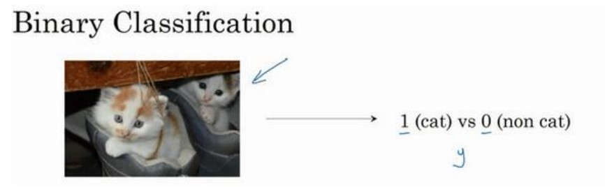
为了保存一张图片,需要保存三个矩阵,分别对应图片中红绿蓝三种颜色通道,如果图片大小为64x64像素,那么就有三个64x64的矩阵.
将这些像素值提取出来,然后放入一个特征向量x.为了把这些像素值转换为特征向量x,我们把所有的像素都取出来,得到一个吧图片中所有红绿蓝像素值都列出来的特征向量.如果图片的大小是64x64像素,那么x的总维度就是64*64*3=12288.现在用n_x=12288表示输出特征向量的维度.
符号定义:
- x:表示一个n_x维数据,为输入数据,维度为(n_x,1)
- y:表示输出结果,取值为(0,1);
- $(x^{(i)},y^{(i)})$:表示第i组数据,可能是训练数据,也可能是测试数据,此处默认为训练数据;
- X = [$x^{(1)},x^{(2)},…,x^{(m)}$]:表示所有的训练数据集的输入值,放在一个n_x * m的矩阵中,其中m表示样本数目;
- Y = [$y^{(1)},y^{(2)},…,y^{(m)}$]:对应表示所有训练数据集的输出值,维度为1*m
用一对(x,y)来表示一个单独的样本,x表示n_x维的特征向量,y表示标签(输出结果)只能为0or1.而训练集将有m个训练样本组成,其中$(x^{(1)},y^{(1)})$表示第一个样本的输入输出,以此类推,然后所有的这些仪器表示整个训练集.又是偶户为了强调这是训练样本的个数,会写作$M_{train}$,当涉及到测试集的时候,我们会之用$M_{test}$来表示测试机的样本数.
为了能把数据集表示的更紧凑一点,我们会定义一个矩阵用大写的X表示,他由输入向量$x^{(1)};x^{(2)}$等组成,把$x^{(1)}$作为第一列,$x^{(2)}$作为第二列…就得到了训练集矩阵X,所以这个矩阵由m列,m是训练集的样本数量,然后这个矩阵的高度即为$n_x$.
简单温习一下:X是一个规模为$n_x$乘以m的矩阵,当用python来实现时,会用到X.shape(),这是一条Python命令,用于显示矩阵的规模,即X.shape等于$(n_x,m)$.
那么怎么输出标签y呢?用Y=[$y^{(1)},y^{(2)},…,y^{(m)}$]来表示,是一个1乘以m的矩阵,同样适用Y.shape==(1,m)
逻辑回归(Logistic Regression)
本节将会主要极少逻辑回归的Hypothesis Function(假设函数)
为了时变图片,你想要一个算法能够输出预测,现只能称之为估计值$\hat y$,也就是对实际值y的估计.更正式的说,你想让$\hat y$表示y等于1的一种坑性或是机会,前提条件是给定了输入特征X,换句话说,如果X是那张似乎是猫的图片,你想让$\hat y$来表示这是一只猫的图片的纪律是多大. X是一个$n_x$维向量(相当于有$n_x$个特征的特征向量).我们用w来表示逻辑回归的参数,这也是一个$n_x$维向量(因为w实际上是特征权重,维度和特征向量相同),参数里面还有b,这是一个实数(表示偏差).所以给出输入x以及参数w和b之后,就可以得出 $\hat y$ = $w^Tx+b$ ($w^T$表示w的转置)
这时候我们得到的是一个关于输入x的线性函数,但却不是一个好的算法,因为如果想要$\hat y$表示实际值y等于1的几率的话,$\hat y$应该在0到1之间.但$x^T+b$可能要比1大或者为负值,对于想要的在0和1之间的概率来说是没有意义的.因此,在逻辑回归中,我们的输出上面的线性函数作为自变量的sigmoid函数.
关于sigmoid的公式:$\sigma(z) = (1 + e^{-z})^{-1}$
逻辑回归的代价函数(Logistic Regression Cost Function)
为什么需要代价函数:
为了训练逻辑回归模型的参数w和参数b,我们需要一个代价函数,通过训练的方式得到w,b.
逻辑回归的输出函数:
为了让模型通过学习调整参数,你需要给予一个m样本的训练集,这回让你在训练集上找到参数w和参数b.
对于训练集的预测值,我们将其写成$\hat y$,这个值自然是与y越接近越好
损失函数:
损失函数又叫误差函数,用来衡量算法的运行情况,Loss function:$L(\hat y,y)$,损失函数L用来衡量预测输出值和实际值有多接近,一般取预测值和实际值的平方差或者他们平方差的一般,但在逻辑回归中我们不这么做,因为当我们在学习逻辑回归参数的时候,会发现我们的优目标不是凸优化,只能找到多个局部最优值,梯度下降法很可能找不到全局最优值,虽然平方差是一个不错的损失函数,但是我们在逻辑回归函数中会用:$L(\hat y ,y) = -ylog(\hat y)-(1-y)log(1-\hat y)$作为损失函数.
为什么呢?因为这个函数能使逻辑回归损失函数的误差尽可能的小.例如:
- 当y=1时损失函数$L=-log(\hat y)$,如果想要损失函数L尽可能的小,纳闷$\hat y$就要尽可能的大,因为sigmoid函数取值为[0,1],所以$\hat y$会无限接近于1.
- 当y=0时损失函数$L = -log(1-\hat y)$,如果想要损失函数L尽可能的小,那么$\hat y$就要尽可能的小,一位sigmoid函数取值[0,1],所以$\hat y$会无限接近与0.
在这门课中有很多的函数效果和现在这个类似,就是如果y等于1,我们就尽可能让$\hat y$变大,如果y等于0,我们就尽可能让$\hat y$变小.除了衡量单个训练样本的损失函数,还有算法的代价函数,算法的代价函数是对m个样本的损失函数求和然后除以m:
梯度下降法(Gradient Descent)
梯度下降法可以做什么?
在测试集上,通过最小化代价函数(成本函数)J(w,b)来训练的参数w和b
如图,在第二行给出了和之前一样的逻辑回归算法的代价函数(成本函数)
梯度下降法的形象化说明:
在这个图中,横轴表示你的空间参数w和b,在实践中,w可以是更高的维度,但是为了绘图,我们定义w和b都是单一实数,代价函数J(w,b)是在水平轴w和b上的曲面,因此曲面的高度就是J(w,b)在某一点的函数值.我们所做的就是找到使得代价函数J(w,b)函数值的最小值,取其对应的参数w和b.
假定代价函数(成本函数)J(w)只有一个参数w,即用一位曲线代替多维曲线,
:= 表示更新参数
a 表示学习率(learning rate),用来控制步长(step),即向下走一步的长度$\frac {dJ(w)}{dw}$就是函数J(w)对w的求导(derivative)
逻辑回归的代价函数(成本函数)J(w,b)是含有两个参数的:
$\partial$ 表示求偏导符号,可以读作round
计算图(Computation Graph)
可以说,一个神经网络的计算,都是按照前向或后向传播过程组织的.首先我们计算出一个新的网络的输出(前向过程),紧接着进行一个反向传输操作.后者我们用来计算出对应的梯度或导数.计算图解释了为什么我们用这种方式组织这些计算过程.
我们尝试计算函数J,J是由三个变量a,b,c组成的函数,这个函数是3(a+bc).计算这个函数实际上有三个不同的步骤,首席那是计算b*c,我们把它储存到变量u中,因此u=bc;然后计算v=a+u;最后输出J = 3v,这就是计算的函数J.而这三步可以画作下图
由本例可以看出,通过一个从左向右的过程,你可以计算出J的值.为了计算导数,从左到右(红色箭头,和蓝色箭头的过程相反)的过程是用于计算导数最自然的方式.
逻辑回归中的梯度下降(Logistic Regression Gradient Descent)
假设样本只有两个特征$x_1$和$x_2$,为了计算z,我们需要输入参数$w_1$,$w_2$和b,除此之外还有特征值$x_1$和$x_2$.因此z的计算公式为:$z=w_1x_1 + w_2x_2 + b$
回想一下:
- 逻辑回归的公式定义如下:$\hat y = a = \sigma (z)$其中$z = w^Tx+b$,$\sigma (z) = \frac 1{1+e_{-z}}$
- 损失函数:$L({\hat y}^{(i)},y^{(i)} = -y^{(i)}log{\hat y}^{(i)}) - (1-{\hat y}^{(i)})log(1-{\hat y}^{(i)})$
- 代价函数:$J(w,b) = \frac 1m\sum^m_iL({\hat y}^{(i)},y^{(i)})$
假设现在只考虑单个样本的情况,单个样本的代价函数定义如下:
L(a,y) = -(ylog(a)+(1-y)log(1-a))
其中a是逻辑回归的输出,y是样本的标签值.w和b的修正值可以表达如下:
$w:= w-a\frac{\partial J(w,b)}{\partial w}$,$b:= b-a\frac{\partial J(w,b)}{\partial b}$
为了使得逻辑回归中最小化代价函数L(a,y),我们需要做的仅仅是修改参数w和b的值.因为我们想要计算出的代价函数L(a,y)的导数,首先我们需要反向计算出代价函数L(a,y)关于a的导数,在编写代码时可以使用da来表示$\frac {dL(a,y)}{da}$
现在进行最后一步反向推导,也就是计算w和b变化对代价函数L的影响:
1
因此,关于单个样本的梯度下降算法,所需要做的如下:
- 使用公式$dz = (a-y)$计算dz
- 使用$dw_1 = x_1dz$计算$dw_1$,$dw_2 = x_2dz$计算$dw_2$,$db=dz$计算db
- 更新$w_1 = w_1 - adw_1$,更新$w_2 = w_2 - adw_2$,更新$b = b-adb$
m个样本的梯度下降(Gradient Descent on m Examples)
首先时刻记住关于损失函数J(w,b)的定义:$J(w,b) = \frac 1m\sum^m_{i=1}L(a^{(i)},y^{(i)})$
上一节是对于任意单个训练样本,而全局代价函数其实就是1到m项各个损失的平均,它表明全局代价函数对$w_1$的微分,对$w_1$的微分也同样是各项损失对$w_1$微分的平均
所以这里有很多细节,但让我们被这些装进一个具体的算法,同时需要一起应用的就是逻辑回归和梯度下降.
我们初始化J = 0,$dw_1 = 0$,$dw_2 = 0$,db = 0;
代码流程(伪代码):1
2
3
4
5
6
7
8
9
10
11
12
13
14
15J = 0;dw1 = 0;dw2 = 0;db = 0;
for i = i to m
z(i) = wx(i)+b;
a(i) = sigmoid(z(i));
J += -[y(i)log(a(i))+(1-y(i))log(1-a(i))];
dz(i) = a(i)-y(i);
dw1 += x1(i)dz(i); //当特征数较多时,需要使用循环
dw2 += x2(i)dz(i);;
db += dz(i);
J /= m;
dw1 /= m;
dw2 /= m;
db /= m;
w = w-alpha*dw;
b = b-alpha*db;
这种算法看上去很简单,但是也有两个缺点:
- 需要编写两个for循环,第一个for循环是一个小循环遍历m个训练样本,第二个for循环是一个遍历所有特征的for循环,本例中只有2个特征,在特征变多时,确实需要.
- 在深度学习的算法中,代码中显式地使用for循环会使算法很低效,同时在深度学习领域会有越来越大的数据集.所以能够应用你的算法且没有显式地for循环很重要,这回帮助你使用更大的数据集.有一些向量化的技术能够帮你摆脱显式for循环
向量化(Vextorization)
向量化是非常基础的去除代码中for训话的艺术.
在逻辑回归中你需要去计算$z = w^Tx+b$w,x都是列向量,,如果有很多的特征那么就会有一个非常大的向量,所以$w \in R^{n_x}$,$x \in R^{n_x}$,所以如果你想使用非向量化方法去计算$w^Tx$,你需要如下方式:1
2
3
4z = 0
for i in range (n_x)
z+=w[i]*x[i]
z+=b
这是一个非向量化的实现,你会发现这真的很慢,作为一个对比,向量化实现将会非常直接计算$w^Tx$,代码如下:1
z=np.dot(w,x)+b
这是向量化计算$w^Tx$的方法
一个小例子:
1 | import time |
1 | tic = time.time() |
250229.93437289726
Vectorized version:1.9946098327636719ms
dsf
1 | c = 0 |
250229.9343729018
For loop:498.685359954834ms
在两个方法中,向量化和非向量化计算了相同的值,但非向量化版本花费的时间几乎是向量化版本的250倍.
你可能听到过很多类似的话,”大规模的深度学习使用了GPU或者图像处理单元实现”,CPU和GPU都有并行化的指令,又叫做SIMD指令,这代表了一个单独指令多为数据,这表示如果你使用了built-in函数,想np.function或者并不要求你实现循环的函数,它可以让 python充分利用并行化计算.而 GPU更加擅长,但 CPU也不是太差.
向量化的更多例子(More Example of Vectorization)
在写神经网络程序时,或者在写逻辑(logistic)回归,或者其他神经网络模型时,应该避免写循环(loop)语句.
例子,如果你想计算向量$u = Av$,这时矩阵乘法的定义为:$u_i = \sum_jA_{ij}v_{i}$.如果使用非向量化实现,u = np.zeros(n,1),并且通过两层循环for(i):for(j):,得到u[i] = u[i]+A[i][j]*v[j].而向量化方式可以使用u = np.dot(A,v),这样会比两层for循环快得多.
如果你已经有了一个向量v,并且想要对向量v的每个元素做指数操作,得到向量u等于$e^{v_1}$,$e^{v_2}$…$e^{v_n}$.非向量化,首先初始化向量u = np.zeros(n,1),并且通过循环一次计算每个元素,但事实证明可以通过Python的numpy内置函数计算这样的单个函数.所以可以引入import numpy as np,执行u = np.exp(v)命令.这样不仅代码的行数明显减少,并且效率明显高于循环方式.
事实上, numpy库有很多向量函数,比如 u = np.log();np.abs()等.很多的循环方式都能通过类似于这样的函数来解决.
那么将刚才所学到的内容,运用到逻辑回归的梯度下降上.本例中我们有n个特征值,需要循环$dw_1,dw_2,dw_3…$,所以j的实际值是1,2…$n_x$.使用向量化,我们可以不用初始化$dw_1,dw_2…$等于0.而是定义 dw 为一个向量,设置$u = np.zeros(n(x),1)$,定义了一个x行的一维向量,从而替代循环. 我们仅仅使用了一个向量操作$dw = dw+x^{(i)}dz^{(i)}$,最后我们得到$dw = dw/m$,现在我们就借助np库减少了一层循环,但我们仍不满意
向量化逻辑回归(Vectorizing Logistic Regression)
本节将讨论如何实现逻辑回归的向量计算.这样才能够处理整个数据集,实现对梯度下降算法的优化.
首先回顾一下逻辑回归的向前传播步骤. 如果,你有m个训练样本,然后对第一个样本进行预测,需要进行以下步骤:1计算z,$z^{(1)} = w^Tx{(1)} + b$.2计算激活函数$a^{(1)}=\sigma (z^{(1)})$,计算第一个样本的预测值.
依次类推,$z^{(2)} = w^Tx{(2)} + b$,$a^{(2)}=\sigma (z^{(2)})$;$z^{(3)} = w^Tx{(3)} + b$,$a^{(3)}=\sigma (z^{(3)})$; 而m个样本就需要这样做m次,可以看出,为了完成前向传播步骤,即对我们的m个样本都计算出预测值.
曾经有一个矩阵X作为训练的输入,这个X是一个$n_x$行m列的矩阵,表示有m个训练样本和$n_x$个特征值.现在将它写为 Python numpy的形式$(n_x,m)$,这表示X是一个$n_x$乘以m的矩阵$R^{n_x\times m}$. 现在我们相拥类似的方法来计算$z_1,z_2,z_3$等,实际上这只用到了一行代码.
首先我们想计算出$z_1,z_2\ldots z_m$,于是先构建一个1*m的矩阵,其实就是一个m维的行向量.之后计算$Z =z^{(1)},z^{(2)}…z^{(m)}$,发现这可以表达为w的转置$w^T$乘以大写矩阵X然后加上向量[bb…b],即$Z =[z^{(1)}z^{(2)}\ldots z^{(m)}] = w^TX + [bb\ldots b]$.$[bb\ldots b]$是一个$1\times m$的向量(m维行向量).最终得到,$Z = [z^{(1)}z^{(2)}\ldots z^{(m)}] = [w^Tx^{(1)}+b,w^Tx^{(2)}+b\ldots w^Tx^{(m)}+b]$.
以上公式在 numpy的命令是Z = np.dot(w.T,X) + b.这里在 Python中有一个巧妙的地方,这里b是一个实数,当把向量加到这个实数b上时, Python会把b自动扩展为一个$1\times m$的行向量,这在 Python中被称为广播(brosdcasting).
计算完Z之后,就到了计算a的时候了,就像多个x变为X,多个z变为Z,我们把一系列的a定义为A,$A=[a^{(1)}a^{(2)}\ldots a^{(m)}] = \sigma (Z)$
向量化logistic回归的梯度输出(Vectorizing Logistic Regression’s Gradient)
本节重点为如何同时计算m个数据的梯度,并且实现一个非常高效的逻辑回归算法(Logistic Regression)
之前,我们使$dz^{(1)}=a^{(1)}-y^{(1)},dz^{(2)}=a^{(2)}-y^{(2)},\ldots$,现在,对m个训练数据做同样的运算,我们可以定义一个新的变量$dZ=[dz^{(1)},dz^{(2)},\ldots,dz^{(m)}]$,所有的dz变量横向排列,因此,dZ是一个$1\times m$的矩阵,或者说一个m维向量,我们已经知道了A的计算方法,现在只需要得到一个行向量$Y= [y^{(1)}y^{(2)}\ldots y^{(m)}]$,由此,我们可以得到$dZ = A-Y = [a^{(1)}-y^{(1)} a^{(2)}-a^{(2)}-y^{(2)}\ldots a^{(m)}-y^{(m)}]$.
在这之前,我们已经去嗲了一个for循环,但是我们仍然有一个遍历训练集的循环如下:
- 我们看db,不难发现$db=\frac{1m}\sum_{i=1}^mdz^{(i)}$,在python中
db=(1/m)*np.sum(dZ)便可实现. - 再看dw,$dw=\frac 1m \times X\times dz^T$,
使用向量法,我们可以得到:
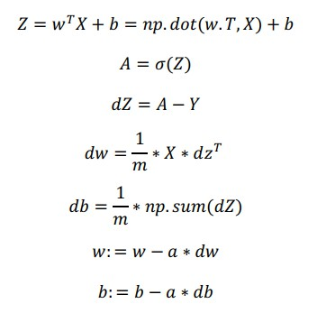
我们利用前五个公式完成了前向和后向传播,也实现了对所有训练样本进行预测和求导,再利用后两个公式,梯度下降更新参数.最后得到了一个高度向量化,非常高效的逻辑回归的梯度下降算法.
Python中的广播(Broadcasting in Python)
1 | import numpy as np |
[[ 56. 0. 4.4 68. ]
[ 1.2 104. 52. 8. ]
[ 1.8 135. 99. 0.9]]
1 | cal = A.sum(axis=0) #axis=0表示求和运算按列执行 |
[ 59. 239. 155.4 76.9]
A.sum(axis=0)中的axis用来指明要进行的运算是沿着哪个轴执行,在numpy中,0指垂直,也就是按列执行,1指水平,也就是按行执行.
1 | percentage = 100*A/cal.reshape(1,4) |
[[94.91525424 0. 2.83140283 88.42652796]
[ 2.03389831 43.51464435 33.46203346 10.40312094]
[ 3.05084746 56.48535565 63.70656371 1.17035111]]
reshape(1,4)指令调用了numpy中的广播机制.实际上,这里使用$3\times 4$的矩阵A除以$1\times 4$的矩阵cal,并不需要将cal重塑,但我们写代码不确定矩阵维度时,通常会对矩阵进行重塑来确保得到我们想要.
在numpy中,当一个$4\times 1$的列向量与一个常数做加法时,实际上会将常数扩展为一个$4\times 1$的列向量,然后两者做逐元素加法.用一个$m\times n$的矩阵和一个$1\times n$的矩阵相加,实际上是将$1\times n$的矩阵扩充为$m\times n$的矩阵,然后做逐元素加法得到结果.
类似的
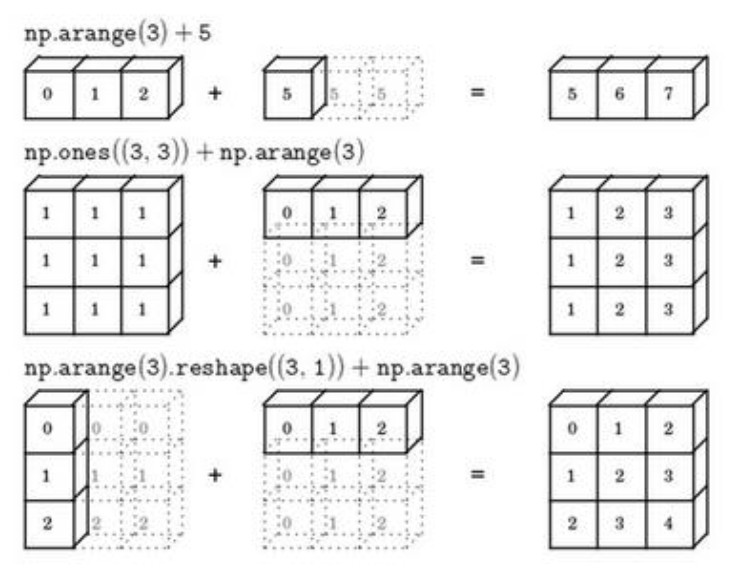
关于 Python_numpy向量的说明(A note on python or numpy wectors)
python的特性允许你使用广播(broadcasting)功能,这是 python_numpy库中最灵活的地方. 但随之而来的是新手在不熟悉这门语言时会产生各种各样的bug,而且很难去de.
1 | a = np.random.randn(5) |
[ 1.28570521 -0.39952845 -1.14993068 -1.4888608 0.97049217]
(5,)
[ 1.28570521 -0.39952845 -1.14993068 -1.4888608 0.97049217]
a是一维数组,并不是向量
1 | b = np.random.randn(1,5) |
[[ 0.45757949 0.22414222 -1.15166206 -0.66948767 -1.01388048]]
(1, 5)
[[ 0.45757949]
[ 0.22414222]
[-1.15166206]
[-0.66948767]
[-1.01388048]]
1 | c = np.random.randn(5,1) |
[[ 2.4021121 ]
[-2.34593325]
[-0.23587459]
[ 1.8976521 ]
[ 1.98826491]]
(5, 1)
[[ 2.4021121 -2.34593325 -0.23587459 1.8976521 1.98826491]]
1 | print(np.dot(b,c)) |
[[-2.4413353]]
[[ 1.09915722 0.53841474 -2.76642137 -1.60818443 -2.43545456]
[-1.07345093 -0.52582269 2.70172232 1.57057338 2.37849592]
[-0.10793137 -0.05286945 0.27164781 0.15791513 0.23914864]
[ 0.86832667 0.42534395 -2.18545392 -1.27045468 -1.92399241]
[ 0.90978924 0.44565411 -2.28980926 -1.33111884 -2.01586297]]
1 |
(选修)logistic损失函数的解释(Explanation of logistic regression cost function)
回想一下,在逻辑回归中,需要预测的结果$\hat y$,可以表示为$\hat{y}=\sigma(w^Tx+b)$,$\sigma$使我们熟悉的S型函数$\sigma(w^Tx+b)=\frac1{1+e^{-z}}$.我们约定$\hat{y}=p(y=1|x)$即算法的输出$\hat{y}$是给定训练样本x条件下y等于1的概率
- 换句话说,如果y=1,在给定训练样本x条件下$y=\hat{y}$;
- 反过来说,如果y=0,在给定训练样本x条件下($y=1-\hat{y}$)
因此,如果$\hat{y}$代表y=1的概率,那么$1-\hat{y}$就是y=0的概率.
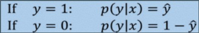
上述两个公式可以合并成如下公式:
证明过程很简单,不赘述
由于log函数是严格单调递增的函数,最大化$\log{(p(y|x))}$等价于最大化$p(y|x)$,于是得到我们之前提到的损失函数的负数$(-L(\hat{y},y))$
$(-L(\hat{y},y))$前面之所以有一个负号,是因为当你
训练学习算法时需要算法输出值的概率是最大的（以最大的概率预测这个值），然而在逻辑回归中我们需要最小化损失函数，因此最小化损失函数与最大化条件概率的对数$𝑙𝑜𝑔(𝑝(𝑦|𝑥))$ 关联起来了，因此这就是单个训练样本的损失函数表达式。
那么在m个训练样本的整个训练集中又该如何表示呢?
假设所有的训练样本服从统一分布且相互独立,所有这些样本的联合概率就是每个样本概率的乘积:
第三周:浅层神经网络(Shallow neural networks)
神经网络概述(Neural Network Overview)
之前我们讨论了逻辑回归，我们了解了这个模型(见图 3.1.1)如何与下面公式 3.1 建立联系。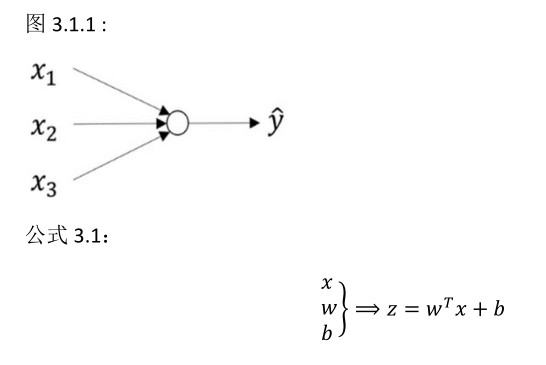
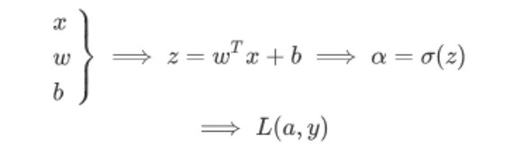
神经网络看起来是如下这个样子的,可以把许多 sigmoid单元堆叠起来形成一个神经网络.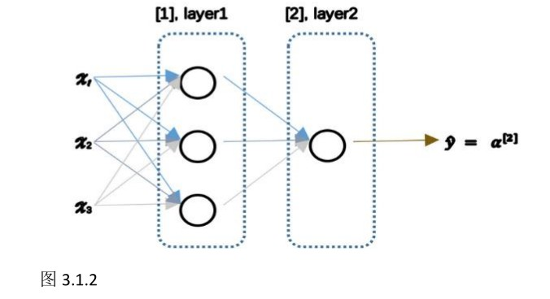
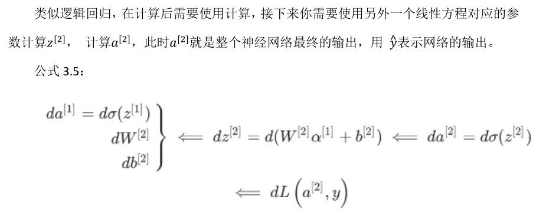
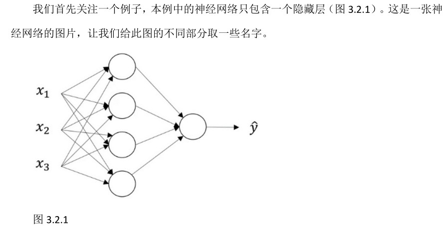
- 输入层:$x_1,x_2,x_3$
- 隐藏层:中间四个结点
- 输出层:$\hat{y}$
现在我们再引入几个符号,就像之前使用向量x表示输入特征,这里使用几号$a^{[0]}$可以用来表示输入特征.a表示激活的意思,它意味着网络中不同层的值会传递到它们后面的层中,输入层将x传递给隐藏层,所以我们将输入层的激活值称为$a^{[0]}$;下一层即隐藏层也会同样产生一些激活值,我们将其基座$a^{[1]}$,具体的.第一个单元或结点我们将其表示为$a_1^{[1]}$,第二个结点的值我们记为$a_2^{[1]}$以此类推.如果将其写成 Python代码,将是一个规格为4*1的矩阵或者说是一个大小为4的列向量.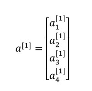
最后输出层将产生某个数值a,它只有一个单独的实数,所以$\hat{y}$将取为$a^{[2]}$.这与逻辑回归很相似.
约定:
- 输入层不计入总层数内,所以上面的那个神经网络是个两层神经网络
- 我们将输入层称为第0层,所以在技术上这仍然是一个三层的神经网络.
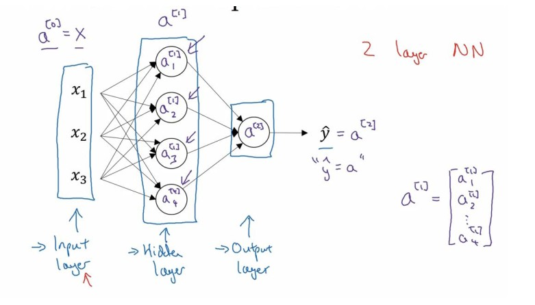
最后我们要看到的隐藏层以及最后的输出层是带有参数的,这里的隐藏层将拥有两个参数W和b,同样的给他们加上上标$(W^{[1]},b^{[1]})$,表示这些参数是和第一层隐藏层有关系的.其中,W是一个4*3的矩阵,b是一个4*1的向量,第一个数字4源于我们有四个结点(隐藏层单元),数字3源于三个输入特征.输出层也将拥有两个参数$(W^{[2]},b^{[2]})$,从维数上看,他们的规模是1*4以及1*1.1*4是因为隐藏层有四个隐藏层单元而输出层只有一个单元.
计算一个神经网络的输出(Computing a Neural Network’s output)
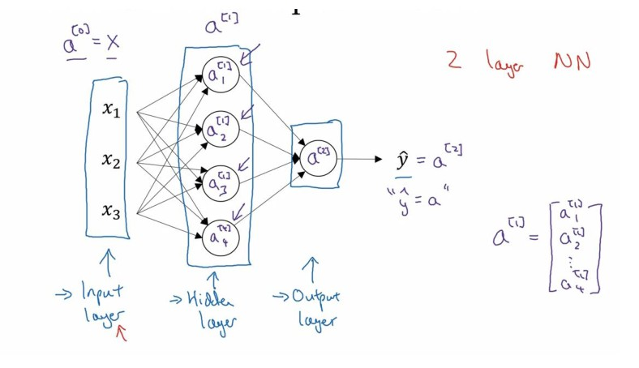
其中，x表示输入特征，a表示每个神经元的输出，W表示特征的权重，上标表示神经网络的层数(隐藏层为1),下标表示该层的第几个神经元.这是神经网络的符号惯例.
神经网络的计算:
- 首先按步骤计算出z
- 以sigmoid函数为激活函数计算出z(得出a)
- 重复…
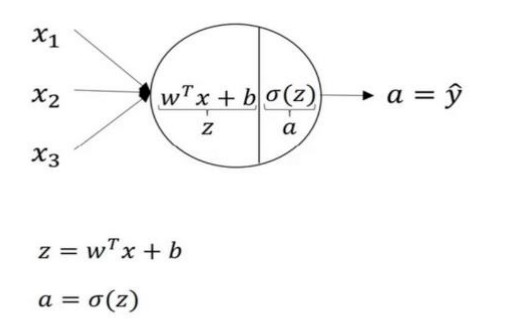
如上图第一个最上面的箭头所指。从上图可以看出，输入与逻辑回归相似，这个神经元的计算与逻辑回归一样分为两步，小圆圈代表了计算的两个步骤。.jpg)
.jpg)
向量化计算使用for循环来执行神经网络是一件很低效的事.向量化的过程是将神经网络中的一层神经元参数纵向堆积起来,例如隐藏层中的w纵向堆积起来变成一个(4,3)的矩阵,用符号$W^{[1]}$表示.另一个看待这个的方法是我们有四个逻辑回归单元,且每一个逻辑回归单元都有相对应的参数—向量w,把这四个向量堆叠在一起,你会得出这4*3的矩阵.因此,
- 公式3.8:$z^{[n]}=w^{[n]}x+b^{[n]}$
- 公式3.9:$a^{[n]}=\sigma(z^{[n]})$
- 公式3.10:
.jpg)
- 公式3.11:
.jpg)
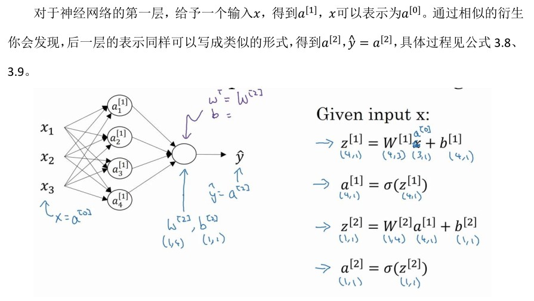
多样本向量化(Vectorizing across multiple examples)
上一节学习了如何针对单一的训练样本,并在神经网络上计算出预测值
这一节将会了解到如何向量化多个训练样本,并计算出结果.
逻辑回归是将各个训练样本组合成矩阵,对矩阵的各列进行计算.神经网络是通过对逻辑回归中的灯饰简单的变形,让神经网络计算输出值.这种计算是所有的训练样本同时进行的,以下是它具体的步骤:
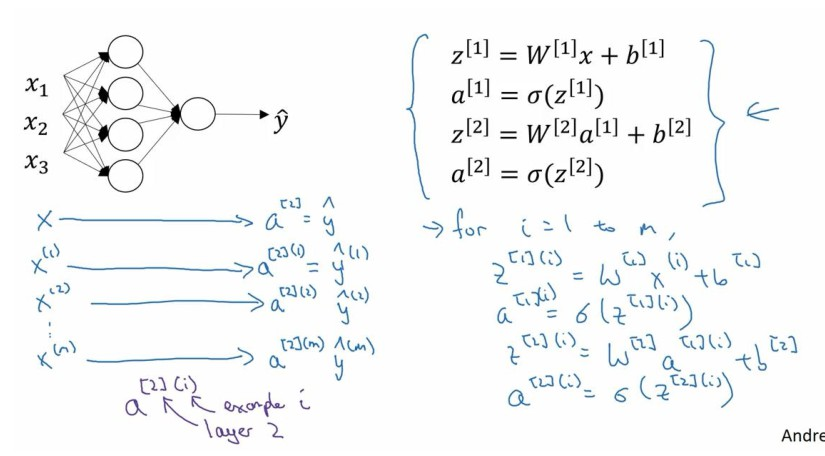
上一节我们得到了四个灯饰,这四个等式可以计算出$a^{[2]}==\hat{y}$,只是针对单一样本的如果有m个训练样本就需要重复这个过程.
- 用第一个训练样本$x^{[1]}$来计算预测值$\hat{y}^{[1]}$,就是第一个训练样本上得出的结果
- 然后,用$x^{[2]}$来计算预测值$\hat{y}^{[2]}$,直至用$x^{[m]}$计算出$\hat{y}^{[m]}$
- 用激活函数表示法,写成$a^{2},a^{2}\ldots a^{2}$.,$a^{2}$,(i)是指第i个训练样本而[2]是指第二层.
如果有一个非向量化形式的实现,而且要计算出它的预测值,对于所有样本,需要让i从1到m实现这四个等式:.jpg)
对于上面的这个方程中的(i) ，是所有依赖于训练样本的变量，即将(i)添加到x，z和a,如果想计算m个训练样本上的所有输出,就应该向量化整个计算.
向量化:.jpg)
激活函数(Activation functions)
在神经网络的前向传播中,$a^{[1]} = \sigma(z^{[1]}),a^{[2]} = \sigma(z^{[2]})$,这两步会使用到sigmoid函数.sigmoid函数被称为激活函数.
tanh函数或者双曲正切函数是总体上都优于sigmoid函数的.
tanh函数是sigmoid向下兵役伸缩后的结果,穿过了(0,0)点,并且至于结余-1与+1之间.结果表明,如果在隐藏层上使用激活函数,$\tanh(z^{[1]})$效果总是优于sigmoid函数,因为函数值域在-1与+1之间,其举止更接近于0的.
担忧一个例外:在二分类为体重,对于输出层,因为y的值是0或1,所以想让$\hat{y}$的数值介于0和1之间,而不是在-1和+1之间,所以需要使用sigmoid激活函数
sigmoid函数和tanh函数两者的共同缺点是,在z特别大或特别小的情况下,导数的梯度或者函数的斜率会变得特别小,最后就会接近于零,导致降低梯度下降的速度减慢
在机器学习另一个很流行的函数是:修正线性单元的函数(ReLu),ReLu:a = max(0,z),所以当z为正值的情况下,导数恒为1,当z为负值时,导数恒为0.ReLu函数图像如图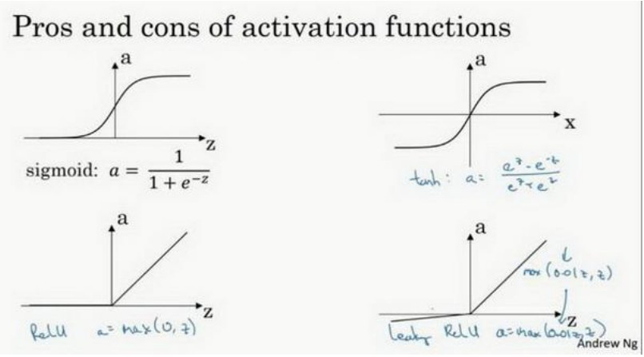.
经验法则:如果是0,1值(二分类问题),则输出层选择sigmoid函数,然后其它的所有单元都选择ReLu函数.这是很多激活函数的默认选择,有事后也会选用tanh激活函数,但ReLu的一个优点是:当z是负值的时候,导数等于0
ReLu函数还有另一个版本:LeakyReLu:a = max(0.01z,z),这个函数虽然比ReLu激活函数效果好,但并不常用
ReLu,Leaky ReLu函数的优点:
- 第一,在z的区间变动很大的情况下,激活函数的导数或者激活函数的斜率会远大于0,在程序实现就是一个if-else语句,而sigmoid函数需要进行浮点四则运算,在实践中,使用ReLu激活函数神经网络通常回避使用sigmoid或者tanh激活函数学习的更快.
- 第二,sigmoid和tanh函数的导数在正负饱和区的梯度都会接近于0,这回造成梯度弥散,而ReLu和Leaky ReLu函数大于0部分为常数,不会产生梯度弥散现象,(同时应该注意到的是，Relu 进入负半区的时候，梯度为 0，神经元此时不会训练，产生所谓的稀疏性,而 Leaky ReLu 不会有这问题
不同激活函数的过程和结论:
- sigmoid激活函数:除了输出层是一个二分类问题基本不会用它.
- tanh激活函数:tanh是非常优秀的,几乎适合所有场合
- ReLu激活函数:最常用的默认函数,如果不确定用哪个激活函数,就是用ReLu或者Leaky ReLu
激活函数的导数(Derivatives of activation functions)
在神经网络中使用反向传播时,需要计算激活函数的斜率或者导数:
- sigmoid activation function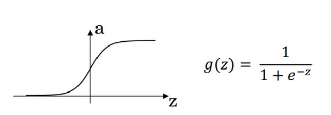
$\frac{d}{dz}g(z)=\frac{1}{1+e^{-z}}(1-\frac{1}{1+e^{-z}})=g(z)(1-g(z))$- 当$z = \pm 10时,\frac{d}{dz}g(z)\approx 0$
- 当$z=0时,\frac{d}{dz}g(z)=g(z)(1-g(z))=\frac{1}{4}$